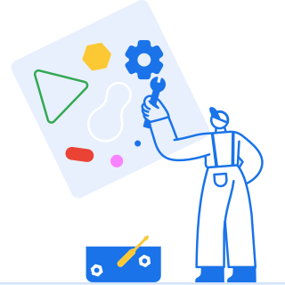

<style include="cr-shared-style shimless-rma-shared">
  .busy-icon {
    float: left;
  }
</style>

<base-page>
  <div slot="left-pane">
    <br> <!-- div is not enough to make a new line after the spinner. -->
    <div class="splash-title">
      <h1 tabindex="-1">[[i18n('shimlessSplashTitle')]]</h1>
    </div>
    <div class="icon-message">
      <paper-spinner-lite id="busyIcon" class="small-icon" active></paper-spinner-lite>
      <span class="instructions">[[getSplashInstructionsText()]]</span>
    </div>
  </div>
  <div slot="right-pane">
    <div class="illustration-wrapper" aria-hidden="true">
      
    </div>
  </div>
</base-page>
